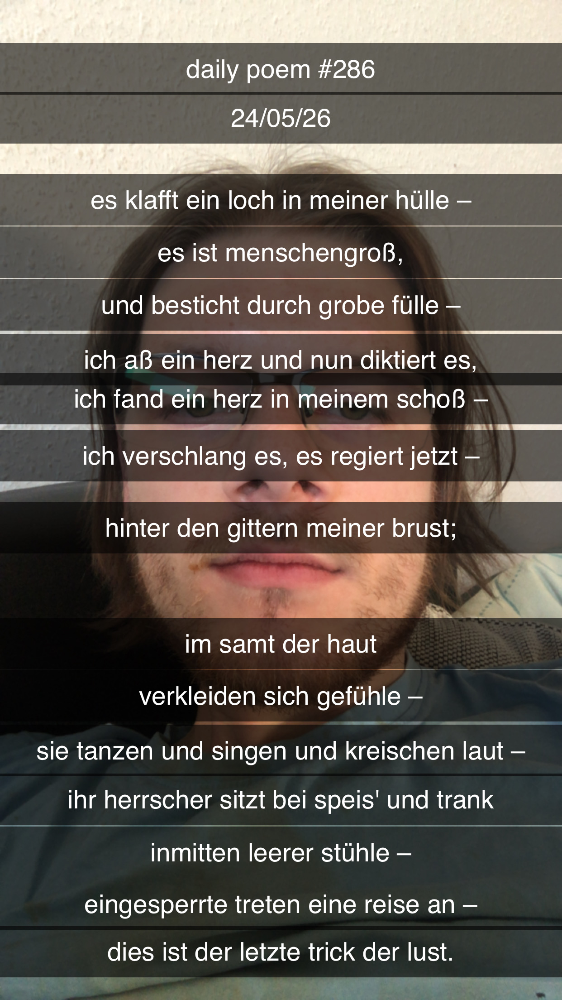

Es klafft ein Loch in meiner Hülle –
[286]Es klafft ein Loch in meiner Hülle –
Es ist menschengroß,
Und besticht durch grobe Fülle –
Ich aß ein Herz und nun diktiert es,
Ich fand ein Herz in meinem Schoß –
Ich verschlang es, es regiert jetzt –
Hinter den Gittern meiner Brust;
Im Samt der Haut
Verkleiden sich Gefühle –
Sie tanzen und singen und kreischen laut –
Ihr Herrscher sitzt bei Speis' und Trank
Inmitten leerer Stühle –
Eingesperrte treten eine Reise an –
Dies ist der letzte Trick der Lust.
